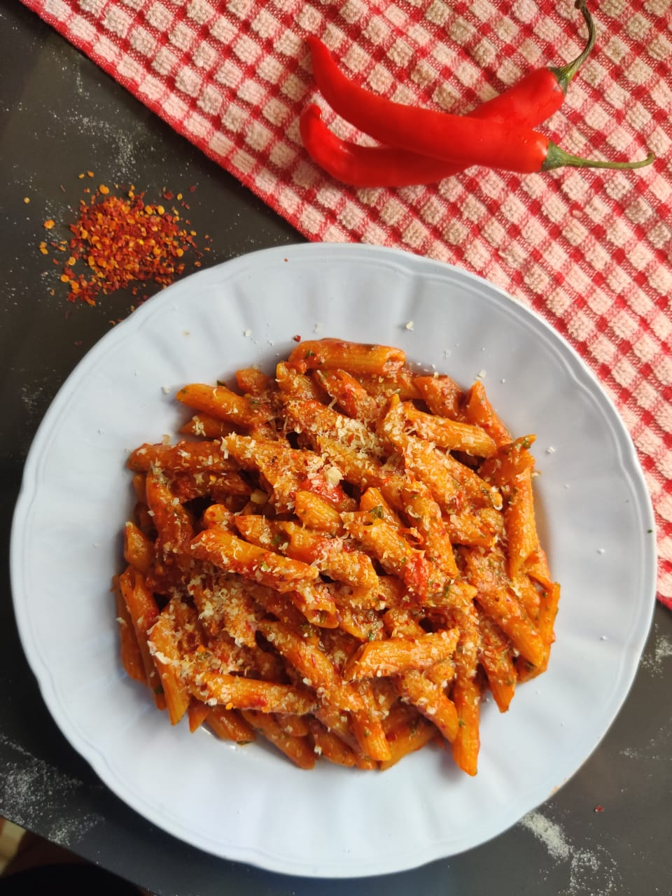

Arrabbiata

Description
Don't be fooled by the arrabbiata's appearance, it packs a huge kick of heat under its tomato guise.
Intensified by actual chili and chili flakes, this angry dish is sure to keep your tongue crying for mercy.
Ingredients
- Penne
- Parmigiano reggiano
- Chili
- Chili flakes
- Pureed tomatoes
- Garlic
- Basil
- Olive oil
- Water
Steps
- Get a pot of water boiling.
- Slice up garlic and chili thinnly. Grate parmigiano reggiano finely and set aside.
- Heat up a pan to medium heat and pour in some olive oil.
- Add in sliced garlic, chili and chili flakes. Stir fry until garlic begins to brown.
- Add pureed tomatoes and basil. Lower the heat once the sauce starts to bubble.
- While the sauce reduces, add penne to the pot and cook until al dente.
- Remove the basil from the pan just before penne finishes cooking.
- Strain the penne and add it into the pan with the sauce. Add pasta water to the pan to adjust consistency if needed.
- Marry penne with the sauce until the sauce reduces slightly.
- Turn off the heat, add in parmigiano reggiano and mix well.
- Plate the pasta and garnish with more parmigiano reggiano. Serve while warm.
Back to Index